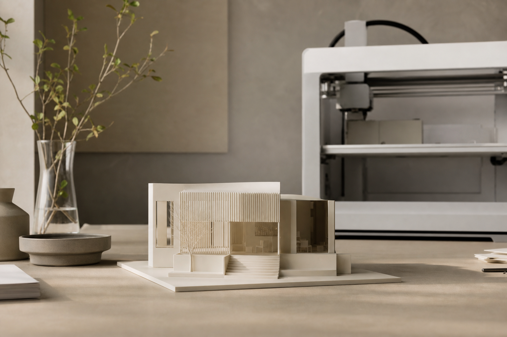
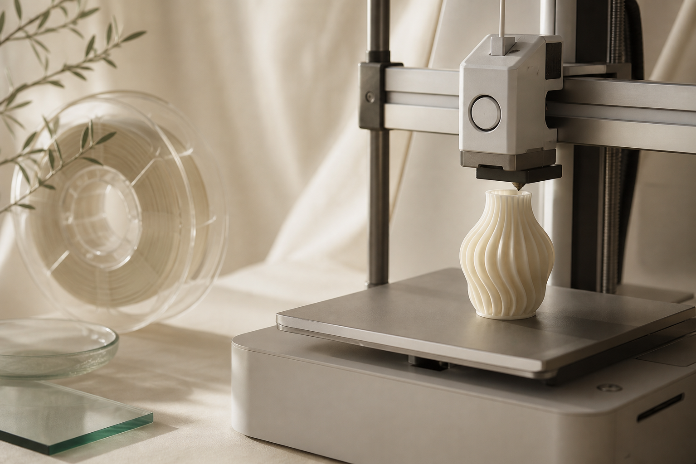
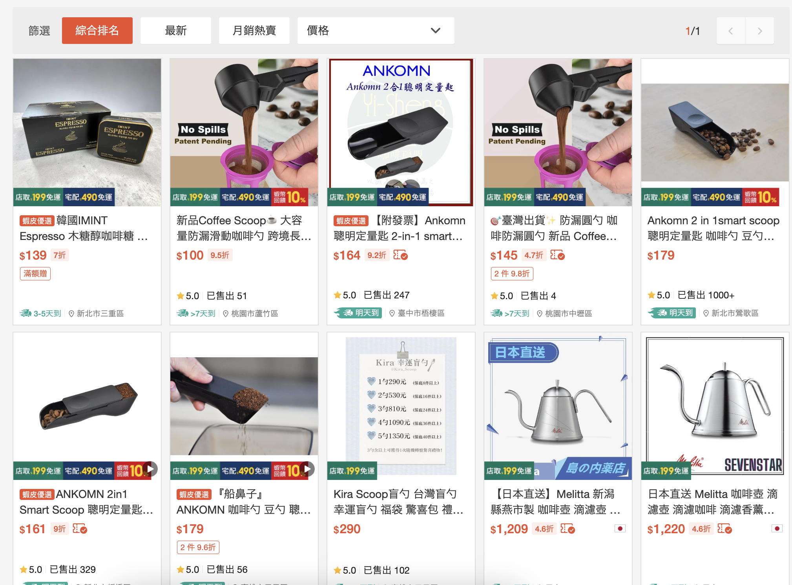
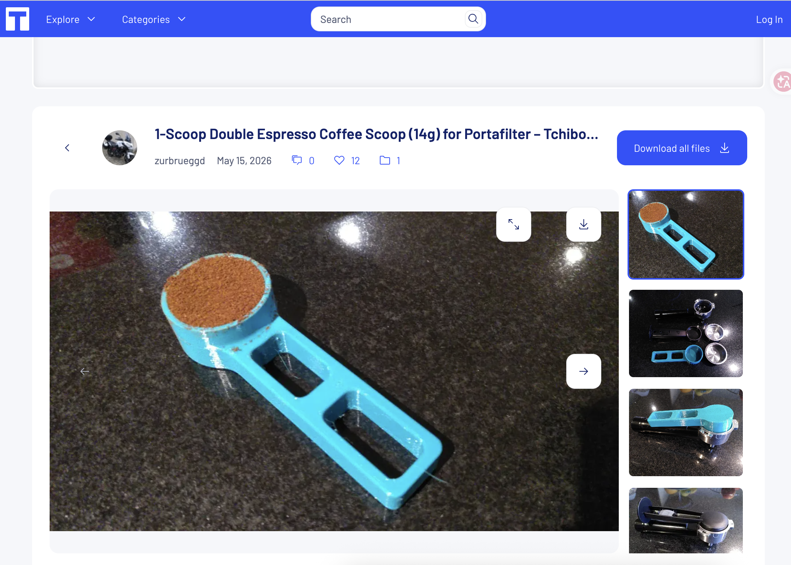
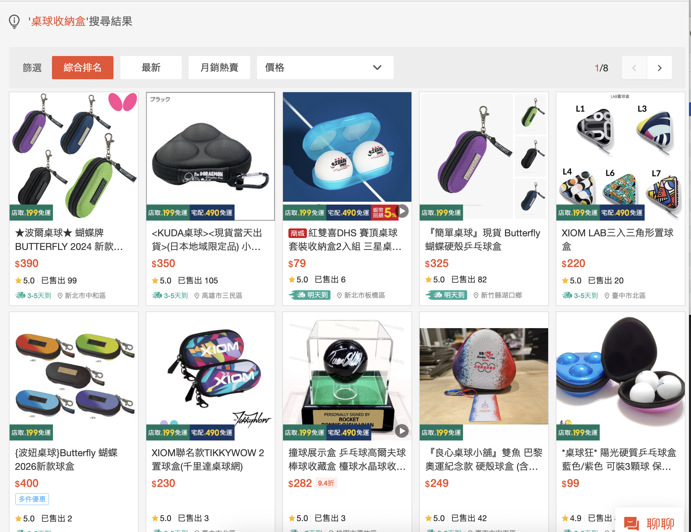
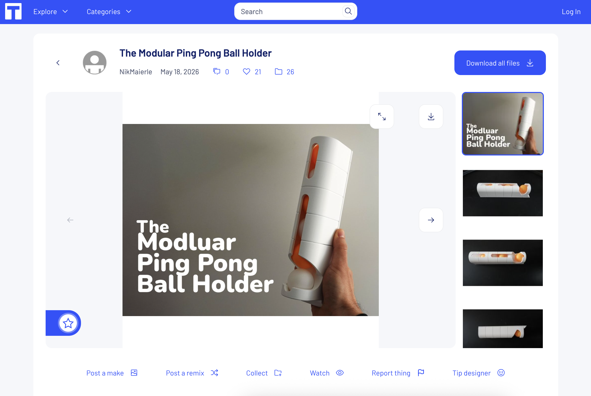
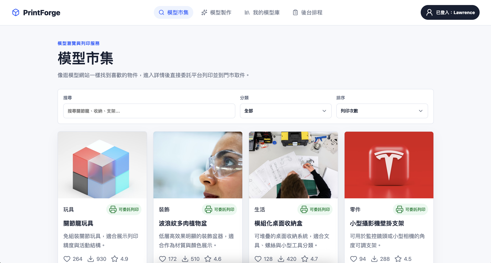
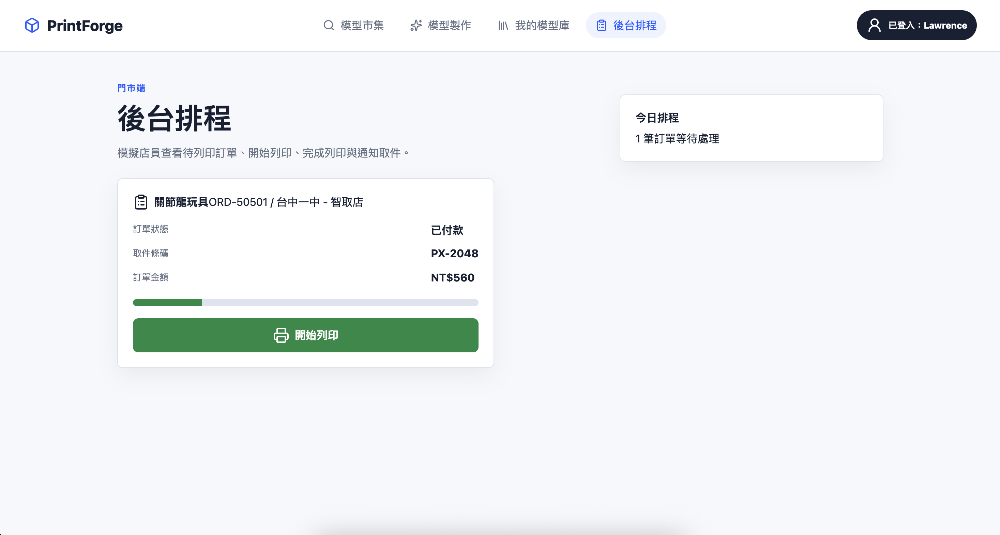
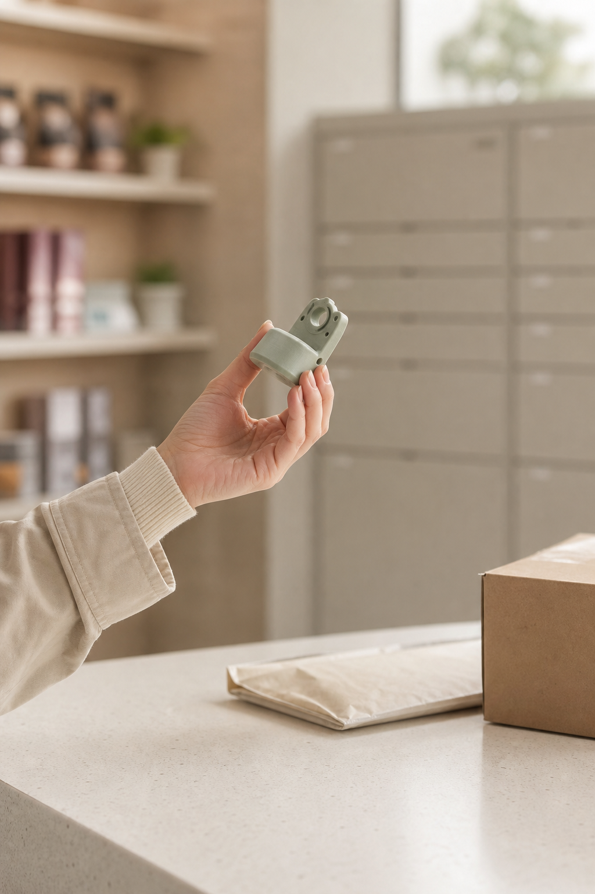

客製成品
量勺、收納盒、零件、文創小物，滿足少量與非標準規格需求。

電子商務概論
讓客製化走進日常生活，實現線上即時列印、線下取件的 O2O 服務。

本企劃不是販售單一商品，而是販售「把模型變成實物」的服務。商品可落在有形產品、無形服務與體驗的交會處。
量勺、收納盒、零件、文創小物，滿足少量與非標準規格需求。
模型檢查、材料選擇、智慧估價、列印排程與通知取件。
使用者從選模型到取件都能看到進度，提升客製化體驗價值。
咖啡豆量勺不見了，臨時需要補一個。上網購買不只等待時間長，價格也不一定划算。
如果能取得模型檔，就能直接列印，快速滿足店內營運需求。
3D 列印適合解決小型、臨時、單件式的補充需求，讓使用者不必等物流或大量採購。


想要裝桌球的器具，但市面上常見產品通常只放兩顆；自己的使用習慣是一次帶 8 顆，現成商品不符合需求。
使用者可上傳自行設計或網路取得的合法模型檔，系統協助檢查、估價並安排列印。
3D 列印能補足市售商品規格不足的問題，讓少量客製化需求也有實際可行的解法。


電子商務不是只有網站下單，而是把交易、資訊、金流、物流與人流整合成可重複運作的服務系統。
確認商品、權利與交易條件。
支援第三方支付與估價後付款。
讓使用者知道能不能印、何時可取。
用熟悉的超商通路完成最後一哩。
讓平台供給與需求可以持續循環。
在產品完成前就理解顧客需要，讓服務設計、定價、通路與推廣一起滿足需求。
產品完成後才想辦法推銷，容易只追求一次成交，忽略使用者後續滿意度。
本服務的核心價值：讓「不會建模、不會操作機器、只想快速取得小量成品」的人，也能完成客製化購買。
利用 3D 列印快速製作產品原型，確認外觀與尺寸，降低開發成本。
喜歡自己製作物品，常用於模型、公仔、Cosplay 道具、DIY 零件與機械結構。
用 3D 列印支援 STEM、工程教學、創意課程與科學模型。
自行列印特殊零件、固定架、工具配件或停產零件替代品。
共同特徵：多半有專業或創作需求；機器價格、維護成本、學習門檻與低頻使用，讓更多有需求者仍停留在潛在使用者。
依可接觸性、獲利性、成長性與足量性評估，第一階段不追求所有人，而是鎖定最能理解服務價值的族群。
有課程專題、生活收納、模型零件、文創小物需求，會搜尋模型，也能接受線上付款與超商取件。
高：社群、校園、創客社團可觸及
中高：客製品可採服務費加材料費
高：模型市集與創作者供給可擴張
中：需從高密度區域先做冷啟動
需要少量零件或客製物件。
搜尋商品、模型、代印評價與價格。
比較電商購買、工作室代印、自行列印。
根據價格、交期、便利性下單付款。
取件、評價、保存模型、再次下單。
企劃重點：每一階段都要降低不確定性，特別是「能不能印、多少錢、何時拿得到」。
一筆訂單可能不只一個角色，因此訊息設計要同時處理需求提出者、付款者與實際使用者的疑慮。
認知、學習、態度、動機、人格特質與生活型態，影響使用者是否相信服務可行。
文化、家庭、參考群體、社群評價與創作者作品，會影響使用者願不願意下單。
把 3D 列印包裝成一般人也能使用的客製服務。
初期主打可愛、實用、列印成功率較高的小型物件。
提供名字、顏色、簡單造型變化。
透過限制模型類型與客製幅度，降低失敗率並穩定品質。
以線材重量作為使用者最容易理解的基礎價格。
模型越大、層高越細，等待時間與機台成本越高。
包含模型檢查、排程、包裝、通知與取件管理。
名字刻印、顏色變化、小範圍客製與急件可形成加價方案。
建議售價 = 線材重量 x 3 元 + 列印時間成本 + 平台服務費 + 門市處理費 + 客製/急件加價

用網站雛形承接搜尋、模型選擇、估價、會員、訂單與付款。
取件場景選擇附近便利商店，讓服務像超商影印一樣日常化。
門市端查看排程、材料庫存、列印異常與取件狀態。
試辦不是一次鋪全台，而是用不同區域驗證「一般人可用、品牌可傳播、早期玩家願意試」三種假設。
學生、工程、設計、文創、小店家與超商網絡重疊度高。
公館、臺大、臺科大、師大、科技大樓周邊 MVP。設計學院、展演活動與創客社群可形成話題。
大直實踐生活圈、圓山/花博周邊品牌型據點。光華、三創、華山聚集 3C、DIY、文創與展場需求。
光華/三創快閃 POC，測模型修復、零件與展場小物。讓 KOL 示範近期可愛、流行、容易拍成短影音的小物件。
展示同一款小物可做姓名、顏色、圖樣等小範圍客製。
主打「幾百種變化」的個人化感，但明確管理技術限制。
導到網站選款、輸入客製文字、估價付款並選附近門市取件。
策略原因：小物件列印成功率較高，適合作為初期主打；客製範圍先控制在可穩定交付的程度。

門市人員處理取件，客服協助模型與訂單問題。
上傳、檢查、估價、付款、列印、通知、取件。
範例照片、材質樣本、包裝標籤與取件通知建立信任。

依使用者取件門市與機台負載分配任務。
完成後貼上訂單標籤與取件碼。
用 App、簡訊或 Email 提醒使用者。
列印失敗、逾期未取、品質爭議都有狀態流程。
快速、透明、就近取得少量客製物件。
材料費、服務費、急件費與模型分潤形成收入來源。
模型供給、估價準確、取件體驗與品質期待管理。
從校園與都會商圈試點，累積模型、評價與流程數據。
電子商務的核心不只是把東西放上網，而是把需求、交易、服務與履約整合成可被信任的流程。